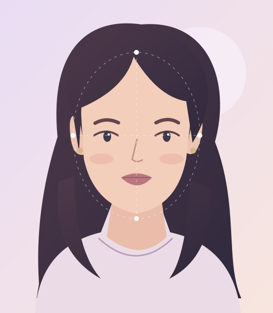

好看，要夸到点上
眉眼、鼻部、唇形、轮廓与协调感，
找到照片里具体的五官亮点。
YOUR BEAUTY, WITH A LITTLE SCIENCE FICTION
一张照片，解锁你的专属颜系。
从五官亮点到妆发灵感，认真发现你的每一份好看。
单张人像即可 · 无需注册 · 生成专属分享卡

清透淡颜系眉眼舒展 ↘↖ 柔和轮廓是让人想再看一眼的
温柔留白感。
示例分数与文案，非插画分析结果
眉眼、鼻部、唇形、轮廓与协调感，
找到照片里具体的五官亮点。
清透淡颜，还是明艳浓颜？
用一个标签，认识自己的风格。
妆容、发型、穿搭、上镜建议，
让下一次尝试有点新思路。
A LITTLE SPOTLIGHT, JUST FOR YOU
上传一张清晰单人照，让好看有迹可循。
点击上传，或拖拽照片到这里
JPG / PNG / WebP · 最大 15 MB正在发现你的五官亮点…
YOUR PERSONAL BEAUTY FILE
今天也请大大方方，喜欢自己。
去发现我的好看 ↗